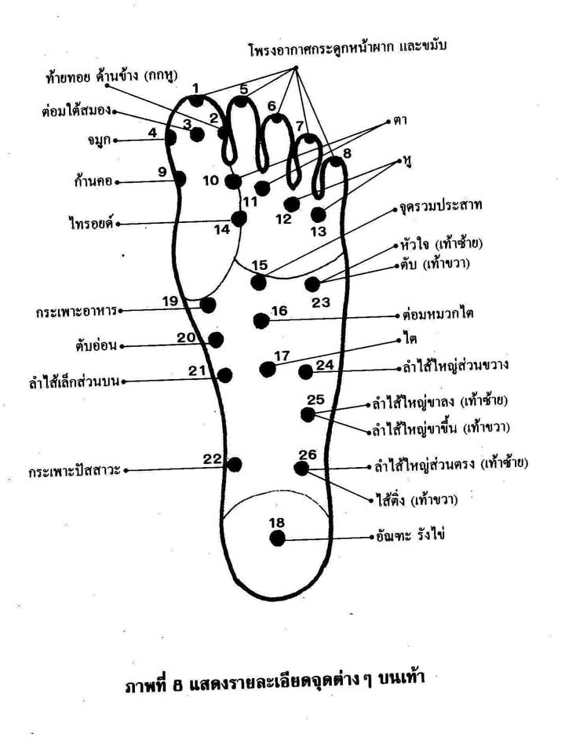
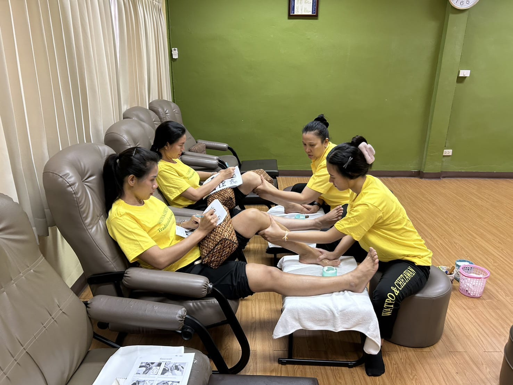

Foot Massage thailandese: tecnica, benefici e riflessologia
Il Foot Massage thailandese (o riflessologia plantare thai) è un trattamento che unisce pratiche corporee e tradizioni di benessere orientali. A differenza del classico massaggio ai piedi occidentale, non si limita a donare sollievo locale: secondo la tradizione, considera il piede in relazione al benessere generale della persona.
Secondo la tradizione orientale, la pianta del piede è una mappa del corpo umano. La stimolazione di punti specifici (punti riflessi) e dei canali energetici (linee Sen) è tradizionalmente associata a una sensazione di rilassamento e benessere.

| Formula | 3 sedute | 6 sedute |
|---|---|---|
| Express30 min | 105 €35 € / seduta | 195 €32,50 € / seduta |
| Completo60 min | 145 €48,33 € / seduta | 270 €45 € / seduta |
Come si svolge la seduta di Foot Massage?
- Il Pediluvio Iniziale: la seduta può cominciare con un bagno caldo ai piedi, talvolta arricchito con sali o oli essenziali, per detergere la pelle e favorire il rilassamento.
- Le Mani e il Bastoncino di Legno (Stick): l'operatore massaggia piedi, caviglie e polpacci alternando pressioni manuali e sfioramenti con oli o creme rinfrescanti, secondo la formula scelta. Può utilizzare anche un piccolo bastoncino in legno liscio per applicare pressioni precise sui punti riflessi.
- Dai Piedi alle Gambe: il trattamento può proseguire lungo polpacci e ginocchia, con manovre pensate per favorire una sensazione di leggerezza.

Benefici del Foot Massage per piedi, gambe e relax
Il Foot Massage Thai può essere una scelta adatta a chi passa molte ore in piedi o desidera un momento di rilassamento concentrato su piedi e gambe, senza un massaggio total body.
- Piedi e gambe affaticati: il trattamento è pensato per dare sollievo e favorire una sensazione di leggerezza a piedi, caviglie e polpacci.
- Relax: la stimolazione dei piedi può accompagnare un momento di rilassamento; le sensazioni e i benefici percepiti variano da persona a persona.
- Punti riflessi: nella riflessologia plantare, specifici punti del piede sono tradizionalmente messi in relazione con diverse zone del corpo. Il trattamento è dedicato al benessere e non sostituisce il parere o le cure di un professionista sanitario.
Scegli la formula giusta per te
La formula Express dura 30 minuti e costa 35 €. La formula Completo dura 60 minuti e costa 50 €.